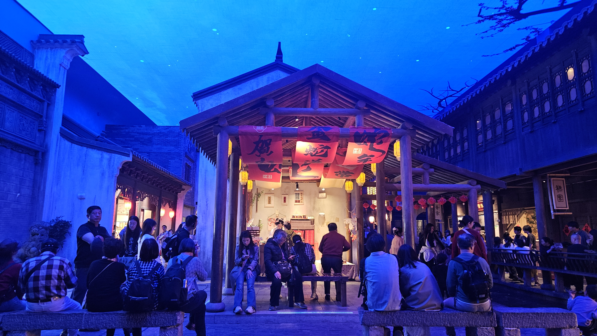
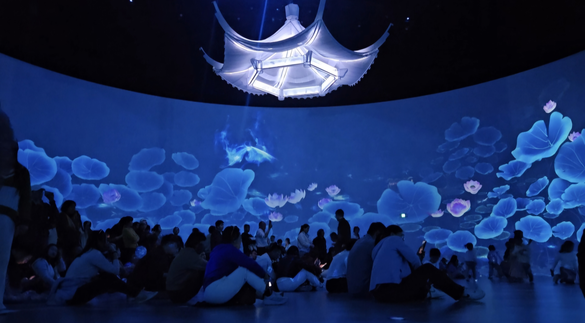
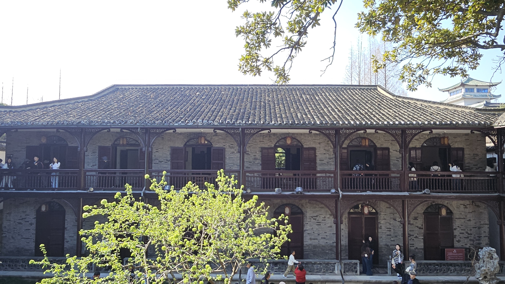
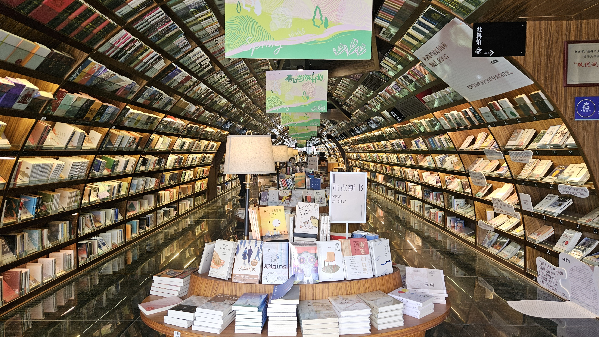

2025-04-13 扬州踏春记
目录
去年冬天，小爽约我今年三四月份去扬州逛逛，我没去过扬州，听着觉得很不错，于是答应下来。
三月初，她跟我说机票和酒店都订好了，让我买上海过去的高铁票，再看看扬州的攻略。于是我们就在一个天气巨好的时节，到了扬州。
这次出行又多了一些体验。我尝试了上海新开的机场联络线。上海的两个机场距离较远，虽然有2号线，但人多站多，耗时长。去年上海新开了一条机场联络线，这次我决定试一试。
离我家最近的站是康桥东站，早上楚噶送我到康桥东站，花了11分钟。到了之后，联络线的安检和地铁的安检一样快，丝滑进站，而且标识非常清楚，左边去浦东，右边去虹桥。我6点53进康桥东站安检等车，6点58上车，7点24到虹桥站下车，7点30已经到了高铁检票口。这个路线，真是省时省力。
第一天：大运河博物馆+东关街
周五中午到了扬州，我们先办了入住，然后去大潮淮吃了淮扬菜，就直奔大运河博物馆。博物馆得提前一周预约，当天很容易没票。
大运河博物馆
 大运河博物馆真的很好玩，我强烈推荐！让我印象最深的有四个馆吧。
大运河博物馆真的很好玩，我强烈推荐！让我印象最深的有四个馆吧。
一馆介绍大运河沿线的文化，在出口处有裸眼5D的全景视频，这个视频介绍京杭大运河路过的城市，苏州吴门桥——无锡清名桥——常州东坡公园——镇江金山寺——扬州文峰塔——淮安水上立交——宿迁中运河——徐州窑湾古镇——泰安戴村坝——沧州白洋淀——天津三岔河——北京白浮泉——洛阳回洛仓——淮北隋堤烟柳——绍兴古纤道——宁波三江口（中国大运河入海口，海上丝绸之路起始地）。看的人很多，但等待是值得的，强烈建议站在第一排看一次，太美了。
另外一馆的电子触摸屏展示每个朝代船只的演变，从简单的木筏到复杂的画舫，就像翻阅一部水上文明的发展史，对比非常有趣。
二馆的主题是运河上的舟楫。进入这个馆，你会登上一条船，随着船游览，两岸风景如画，天空飘雪，特别美，实际上你并没有前进，仿真技术让两岸不断往后退。
三馆是我觉得大运河博物馆运营很牛的地方。三馆设计成古代街市，两边有不少商铺，里面的卖家好多都穿了汉服，和环境很搭，天色被晕染成淡淡的幽蓝色，逛着逛着，走到尽头还会看到下雨的场景，可以坐在那边吃糕点，听雨声。这个体验感真的很好。

八馆有720度全息投影，坐在圆厅里，特别安逸，感觉身处另一个世界。我们逛累了在这里休息了一会儿，很解压。

从博物馆出来，我们打车到了东关街，我们约了东关街上芍药园子晚上六点的扬州评话。

我们在大众点评买的芍药园子的票。提前十分钟进场，每个人的桌上都会有碟果子和一杯绿杨春。整个节目差不多60分钟，分为四个部分，第一部分是古琴，弹的《流水》，第二部分是扬州清曲，第三部分是扬州评话，主持人教我们学了几句扬州话，比如“很好”就是“呱呱叫”，“莱斯”。评话我差不多都听懂了，还是很好玩的。第四部分是扬州小调。我最喜欢的还是扬州评话，语言类节目总是那么有趣。
第二天：瘦西湖+鉴真樱花大道
瘦西湖

在去之前，我们在小红书上看了攻略，说瘦西湖要走很远，建议坐船。但我们那天边走边逛，从南门进，一路欣赏和拍照，中间歇了下喝了咖啡，一直走到北门，也没有很累，还一路走到了大明寺附近。

瘦西湖人多的地方主要有二十四桥（三座桥联通，有限流）和五亭桥。除此之外，人并不多，越往北门走人越少。南门的垂柳特别美，仿佛能看到江南风的形状，还有大片桃花（一开始我们认成了梅花）和大棵玉兰树，垂丝海棠花也很美。小爽还喜欢里面一大片蓝紫色的小花，拍照很好看。 离开瘦西湖时，小爽很舍不得，说回去就要面对沈阳的冬天了。

鉴真樱花大道
我们去的时候樱花开了很多，但还没到鼎盛时期，人不多。鉴真樱花大道中间有鉴真和尚的石像，以及鉴真图书馆。鉴真大道两旁种满了樱花，淡粉色的染井吉野樱如云似雪，特别好看。
 顺着大道一路走，我们到了鉴真图书馆。鉴真东渡的故事很吸引我们。鉴真东渡主要是去传授佛教真理，他很执着，一共东渡了六次。第一次东渡，还没出发就被诬告，没成行；第二次东渡，碰到风浪，船被击破；第三次东渡，官府出面阻止；第四次东渡，弟子阻拦没成行；第五次东渡，遭遇台风，在海上漂泊了11天；第六次东渡，终于抵达了日本，这时鉴真已经66岁了。
顺着大道一路走，我们到了鉴真图书馆。鉴真东渡的故事很吸引我们。鉴真东渡主要是去传授佛教真理，他很执着，一共东渡了六次。第一次东渡，还没出发就被诬告，没成行；第二次东渡，碰到风浪，船被击破；第三次东渡，官府出面阻止；第四次东渡，弟子阻拦没成行；第五次东渡，遭遇台风，在海上漂泊了11天；第六次东渡，终于抵达了日本，这时鉴真已经66岁了。

第三天：何园+皮市街+朱自清故居+钟书阁
因为第二天走太多步数了，第三天我们安排得很休闲。
何园
何园被称为“晚清第一园”，原名“寄啸山庄”，取自陶渊明的诗词“倚南窗以寄傲”和“登东皋以舒啸”。何园的主人是何芷舠，建于清代同治元年。
 在逛的过程中，让我印象深刻的有两点，一是园主很喜欢船这个元素，它有一个园子的地上用鹅卵石和瓦片铺成了波浪，于是房屋就像海上行驶的船。二是这个园不是传统的中式园林，卧室书房有百叶窗、壁炉，室外院子有高大的门拱，都能感受到西方文化的影响。
在逛的过程中，让我印象深刻的有两点，一是园主很喜欢船这个元素，它有一个园子的地上用鹅卵石和瓦片铺成了波浪，于是房屋就像海上行驶的船。二是这个园不是传统的中式园林，卧室书房有百叶窗、壁炉，室外院子有高大的门拱，都能感受到西方文化的影响。
 另外，听说何园的玉兰是一绝，不过我们去的时候已经谢了。
其他
逛完何园，我们去了皮市街。皮市街上很活泼，有书店、咖啡馆和花店，很适合散步。皮市街和东关街相比，我更喜欢皮市街，东关街大部分都是卖吃的，皮市街则更加精致。从皮市街我们直接去了朱自清故居和钟书阁。朱自清故居很小，卧室小小的，院子也小小的。钟书阁非常漂亮，没什么人，我买了一本书，还打了八折。
 下午，我们就启程回去啦。
总结
这次扬州之行，确实是一次非常棒的体验。我们运气特别好，就在我们去的前一周，扬州还很冷，后一周则因为音乐节人满为患，酒店价格飙升。而我们恰好在中间，避开了这些麻烦。
我们在扬州逛了大运河博物馆，东关街，瘦西湖，看了扬州评话，去了何园，鉴真樱花大道，皮市街，朱自清故居，还有超美超美的书店钟书阁。吃了大潮淮，扬州炒饭，蒋家桥饺面馆，顺德粥底火锅，东园，冶春，除了冶春其他感觉都不错。
旅行的意义在于去那些从未见过的地方，去感受不同的人文和自然风光。小爽在沈阳还在经历冬天，而我在上海也刚刚熬过一个漫长的冬季。我们都非常渴望出去踏春，放松一下心情。扬州瘦西湖的柳丝随风飘动，让人感觉轻松。
而且我俩的心态都是：做好计划，但当天能不能实现，就看老天爷啦。我们都不是那种一定要去某个景点，否则就会不高兴的人，所以一路上我们能够随机应变。
比如，我们原本想去趣园吃早餐，结果到那里一看，排号都满了。不过，这也让我们意外地在早上六点见识到了瘦西湖的宁静。由于没排到号，我们拦住了一位门口的保安，问他附近哪里还有吃早餐的地方，他推荐了东园茶社。于是我们去了东园，发现那里的早餐也很好吃。
 比如，我们晚上七点多想去某个淮扬菜饭店吃饭，结果到那里一看前面还有好几十桌在等。我们发现这是一条美食街，于是就找了一家顺德菜餐厅，体验也非常好。原本我们还计划体验扬州的水包皮和修脚服务，但临时听当地人说刀片卫生状况不太有保障，于是我们果断取消了这个计划。
比如，我们晚上七点多想去某个淮扬菜饭店吃饭，结果到那里一看前面还有好几十桌在等。我们发现这是一条美食街，于是就找了一家顺德菜餐厅，体验也非常好。原本我们还计划体验扬州的水包皮和修脚服务，但临时听当地人说刀片卫生状况不太有保障，于是我们果断取消了这个计划。
这种随遇而安的心态在旅游中是非常重要的。这是我们一致认为这次旅程顺利的重要的原因。